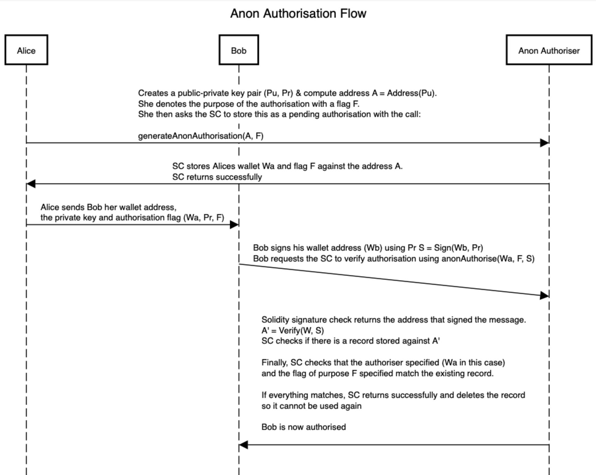
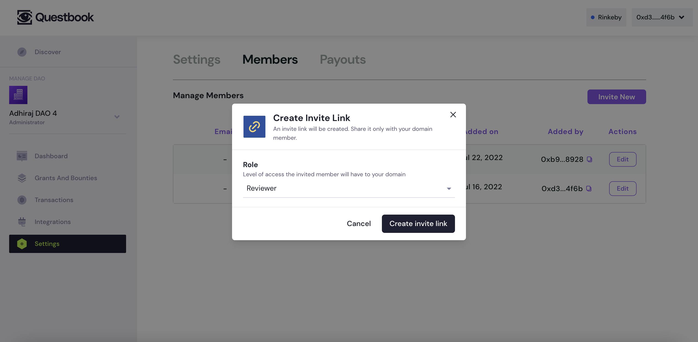
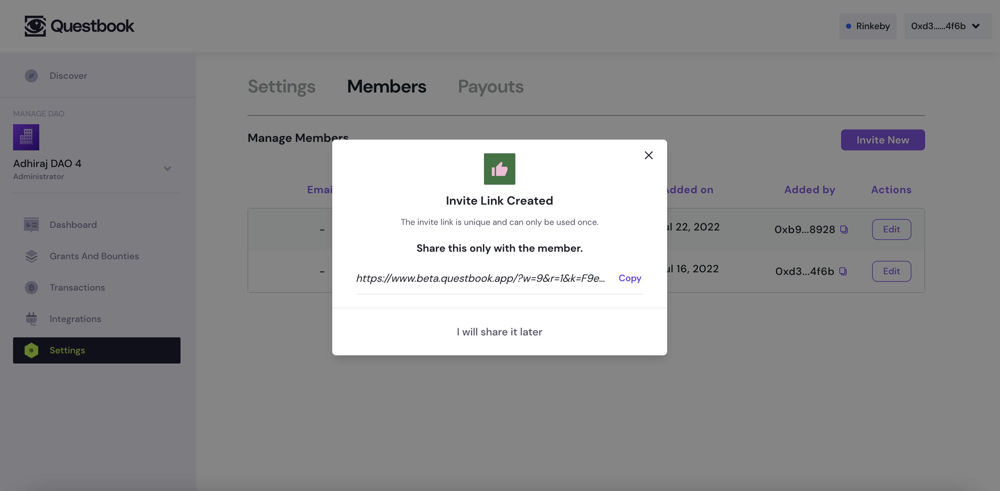
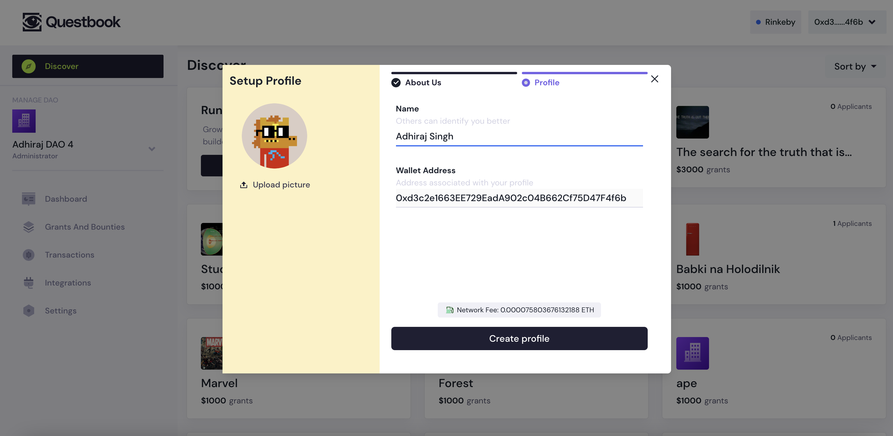
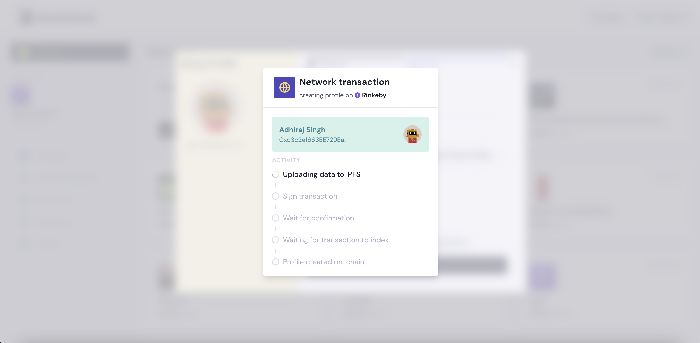

The Problem
Web3 is a nascent stack, and a major challenge dApps like QuestBook face is educating users about web3 terminology and delivering products that are easy to use products as well as decentralised.
One of QuestBook’s workflows allowed DAOs to invite their team members to their organisation on QuestBook. However, to add the user to their organisation on chain, the organisation owner had to ask their team for their respective wallet addresses – which can feel unnatural, since wallet addresses have no easy-to-remember pattern like email addresses do.
We received a lot of feedback on the above mentioned flow from DAOs asking if there’s a way for them to add their members via email or generate an invite link to send their team. Realising this is a UX problem we need to resolve for our users, we got to work.
Coming Up With a Solution
To allow users to invite by email, we’d need to verify that the wallet wanting to join the organisation actually owned the email address that was invited. This entire flow had be on-chain and we couldn’t think of a sane way to accomplish verifying the email on chain. So, we decided to tackle the invite link flow. Could we generate an invite link that an organisation owner can share with their team member, which they can use to join the organisation? And can we accomplish this purely on-chain?
We believed we could make it work somehow, and so we came up with a few approaches.
The inviter could hash a secret and then include the secret in the invite link and send this across to the invitee. The invitee would then pass the secret to the smart contract, which could then hash and check if the secret matched, if it does – we accept the invite and the user joins the DAO. Voila, on chain invites.
The problem with the above approach was that it could be front run, anybody observing the transaction could pay more gas and wrongly get into the organisation.
The Solution
To resolve this front running problem, we thought of using public/private key crypto and so, we came up with the following framework – labelling it “Anon Authoriser”:
- Let’s assume Alice wants to authorise Bob to take a certain action. In this case, Alice is the authoriser.
- Alice Creates a public-private key pair
(Pu, Pr)& compute addressA = Address(Pu).- Note: your ETH address is a function of your public key – which is
Ain this case
- Note: your ETH address is a function of your public key – which is
- She denotes the purpose of the authorisation with a flag F. This flag prevents Bob from using Alice’s authorisation to undertake another action that she hasn’t authorised
- In our invite link case, the flag can be the hash of the organisation and role the invited user would undertake. This prevents misuse of the same invite.
- She then asks the SC (smart contract) to store this as a pending authorisation with the call:
generateAnonAuthorisation(A, F) - SC stores Alices wallet
Waand flag F against the address A - SC ensures this address hasn’t been used already & returns successfully
- Alice sends Bob her wallet address, the private key and authorisation flag (Wa, Pr, F)
- Bob signs his wallet address (
Wb) usingPrS = Sign(Wb, Pr) - Bob requests the SC to verify authorisation using
anonAuthorise(Wa, F, S) - Solidity signature check returns the address that signed the message. The SC uses this to verify the signature sent by Bob, the message being Bob’s wallet address
A' = Verify(Wb, S) - SC checks if there is a record stored against
A' - Finally, SC checks that the authoriser specified (
Wain this case) and the flag of purpose F specified match the existing record. - If everything matches, SC returns successfully and deletes the record so it cannot be used again
- Bob is now considered authorised.
Prcan even be published online as it cannot be used now
- Note: this entire approach cannot be front run because in order to do that, another user would need to sign their wallet address – for which they’d need the private key, and that they don’t have access to.

The Labour
Once we had a framework in mind, we had to prove this works & so we built out this approach in a solidity smart contract, which you can access here. This repo contains the SC & JS utils required to utilise anon-authoriser.
Then, we incorporated this flow into our grants smart contract to truly enable this invite link flow in our dApp. You can find the PR for the implementation here
Finally, the last leg of the solution was building out the frontend to interact with this SC, which you can find here
The Fruit
Our theory worked, we now had a secure, fully decentralised way to generate invite links on chain. We built the web3 equivalent of an OTP. You can create a DAO on QuestBook and try it out now!
Preview
What it looks like to create an anon-authoriser link
 
What it looks like to join an anon-authoriser link
 